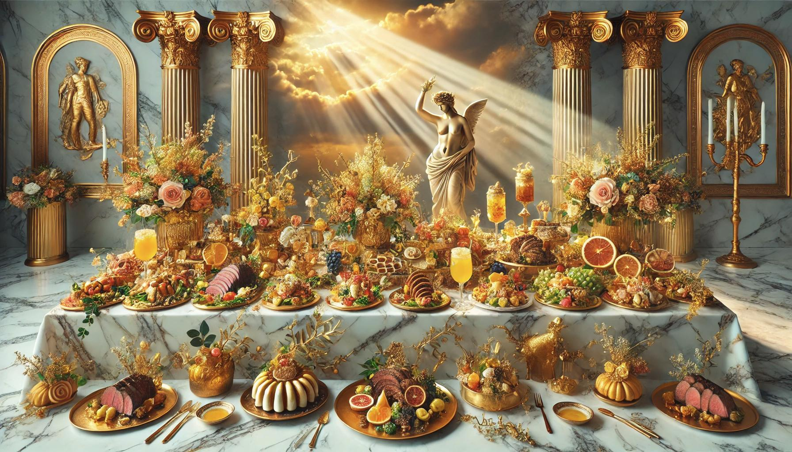

Step into a realm of divine flavors and heavenly creations. Here, every dish is crafted to delight your senses and elevate your dining experience to mythical proportions. Whether you seek the power of Hercules, the charm of Aphrodite, or the wisdom of Athena, our recipes will guide you on a culinary journey fit for the gods. Let the feast begin!
